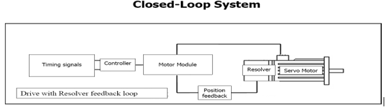

IDS All-Inverter Systems
Purpose
To define a procedure that applies to all plants to inspect and maintain IDS Servo Inverter systems.
Reference
- EHS-02-107 Lockout Tagout Tryout
- MAC-07-002 Maintenance and Inspection for an IS Machine
Document Classification
- Asset Protection and Stability
Procedure
- Overview:
- The Integrated Drive System (IDS) primarily uses Siemens technology. IDS drive systems offer the capability to drive synchronous motors as well as servo motors in dedicated or combined configurations. The most typical combination found in this kind of setup includes the servo feeder and gob delivery combined with ware handling (Machine Conveyor, Radial Transfer and Cross Conveyor.
- The IDS stand-alone inverter system operates with an oploop logic to drive one synchronous motor per axis.
- The Servo IDS system operates with a closed-loop logic. (See image on next page.)


- Safety:
- Lockout/Tagout (LOTO) Procedure Template and commonly used devices must be available (EHS-02-107 Lockout Tagout Tryout).
- The IDS Main Control Cabinets have components that require a 5-minute wait after the Cabinet has been turned OFF for the voltage to be discharged before the equipment can be safely serviced.
- A discharge time warning should be placed on these components in the local language. Follow the appropriate PPE protocol to service the equipment.
-
Inspection and Maintenance
- A Forming Electronics/Instrumentation Specialist shall perform inspections and maintenance of the servo panel components as specified in MSDR MAC-07-002 Maintenance and Inspection for an IS Machine.
- This includes but is not limited to the following:
- Inspection:
- Filters on the enclosures
- Condition of the panel
- Temperature of the control room and inside the panel
- Enclosure, rack, and board recirculation fans
- Remote panel lighting and tidiness
- Field cabling and terminations
- Check incoming power (phase-to-phase and phase-to-ground)
- Adjust power supply as needed.
- Maintenance:
- Replace any faulty recirculation fans.
- Replace filters as recommended.
- Replace burned cables.
- Replace cables with any damage on the insulation.
- Repair remote panel as needed.
- Inspection:
- Drawings Related to the IDS System:
- IDS-0102 IDS Stand-alone Inverter Cabinet Assembly
- IDS-0110 IDS Base Cabinet (1000 mm) Assembly
- IDS-0120 IDS Servo/Inverter Base Cabinet Assembly
- IDS-0121 IDS All-Inverter Add-On Package Assembly
- SCS-01315 Pacer Board Assembly
- IDS-5-2 IDS All-Inverter System Installation with 18-Amp Double Motor Modules
- IDS-5-5 Sinamics™ Module Wiring Termination Details
- IDS-5-15 IDS Interface to Chute Control Installation
- IDS-5-16 IDS All-Inverter System Installation with 18 Amp Single Motor Modules
- IDS-5-17 IDS Offline Tester System Installation
Approval
|
Region |
Representative |
|
Asia Pacific |
John Pillen |
|
Europe |
Jean-Pierre Locato, Marco Marchelli, Ruud Bormans, Rafal Szkoda |
|
Americas South |
Paul Arriz |
|
Americas North |
Daniel Devries |
|
Global Operations |
Juan Ishiguro, Franklin Barrios |
Revision History
| 2020-02-21 |
Approved by Juan Ishiguro, IS Machines Discipline Leader Originally Released as MAC-02-602 |
| 2022-05-09 |
Approved by Franklin Barrios, Global Leader FES Network. Moved to GMF Site as FES-02-250 |